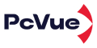
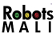
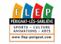

Resume
Experience

Technical Content Developer
2022 - Present
Technical Editor
June - September 2022
Technical Writer
April - May 2022

Knowledge Designer / Project Designer
September 2021 - April 2022

English Teacher
September 2019 - Mars 2020

Translator & Terminologist Freelancer
September 2017 - May 2019
Notable projects
Professional projects
Vate AI solution
lol
From PDFs to Dynamic Learning project
lol
Localization Process Optimization project
lol
Reengineering the Documentation Portal & Feedback System Project
lol
Internal Knowledge Management project
lol
College projects
CASP solution
lol
Video tutorial project
lol
An Application of the DocOps Approach to Assure the Quality of Help Documentation Processes
lol
lol
Education & Certifications
Master's in Technical Documentation
2019 - 2021
University Clermont Auvergne
Master of Arts - MA, Translation
2017 - 2019
School King Fahd of Translation
Responsive Web Design Certification
freeCodeCamp
UX Design and Ergonomics Certification
Cegos France
Git Total Certification
Delicious Insights
Skills & Tools
- Project management tools (Jira, Azure DevoPS, Ms planner, Notion etc.)
- AI (ChatGPT, Custom-GPT, Claude)
- Localization/Translation
- Product help creation (Video tutorials, in-app help, online docs, CHMs, Elearning etc.)
- Knowledge management & tools (Sharepoint/Confluence/Notion/Gitbook, Office Suites etc.)
- Feedback & metrics-driven documentation
- Information architecture
- Content strategy
- User and academic Research
- Prompt Engineering for Generative AI
- REST APIs
Languages
- English
- French
- Amazigh
- Arabic